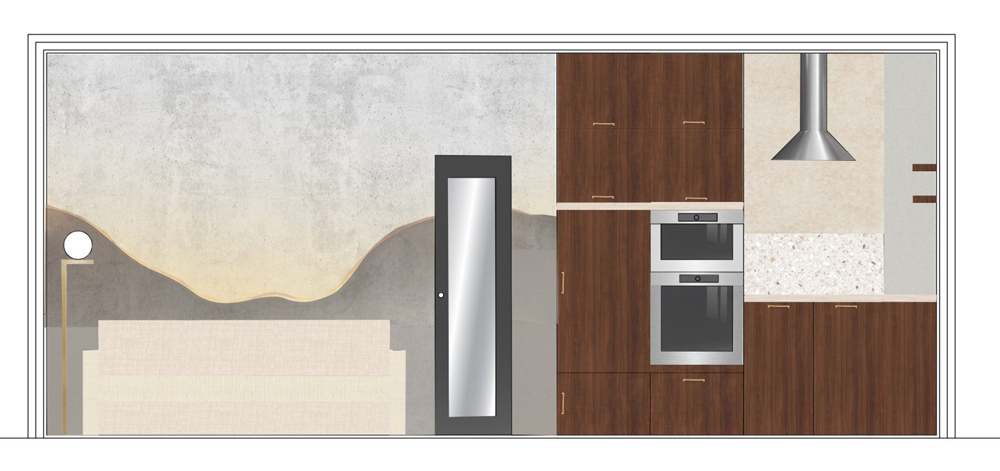
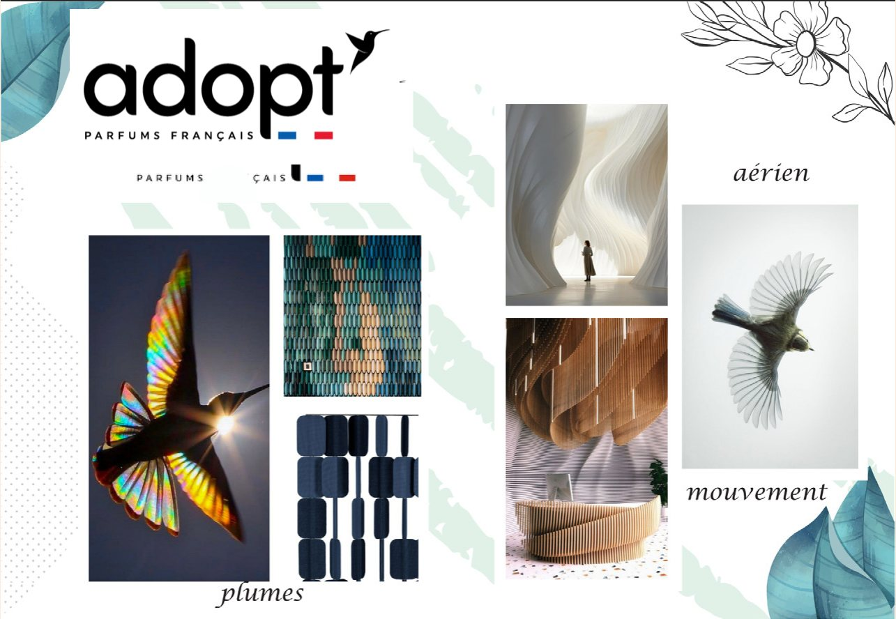
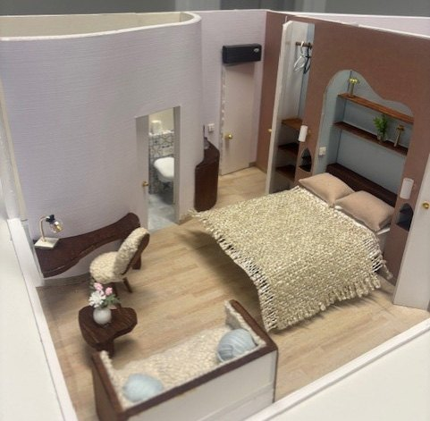
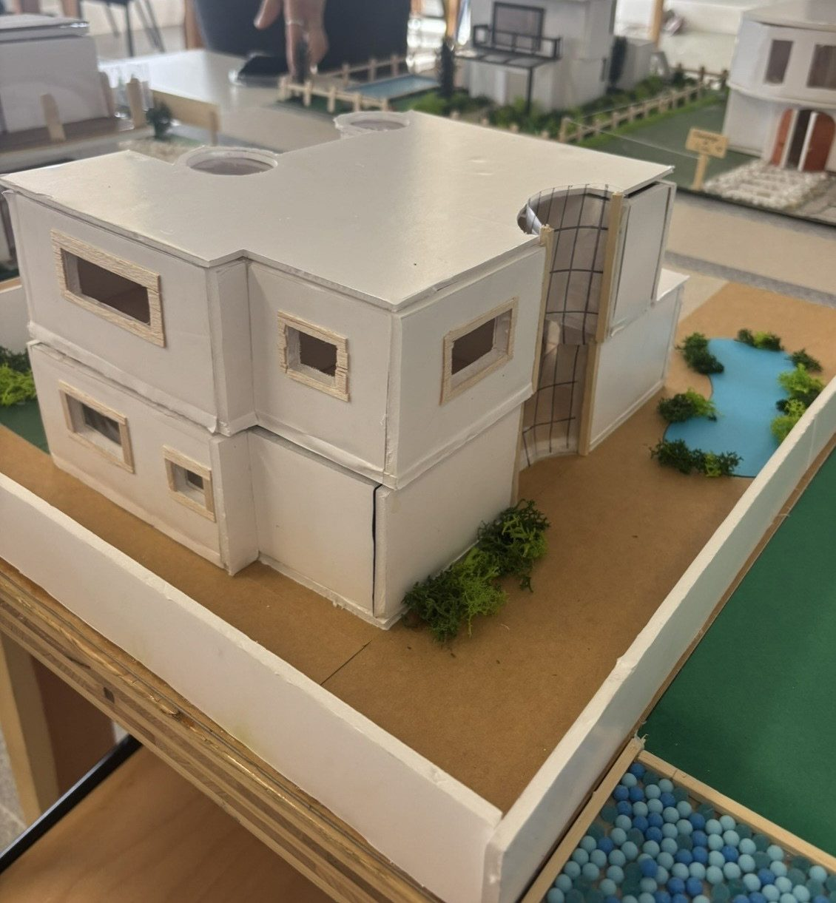
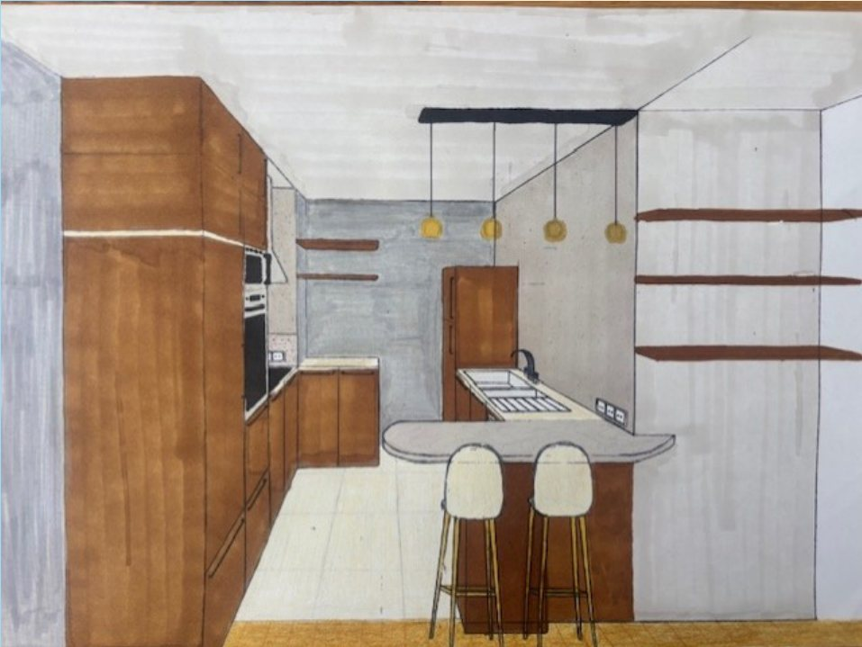

Étudiante en architecture d'intérieur · Ynov Val d'Europe
Je conçois ·
Étudiante en 2e année d'architecture d'intérieur à Ynov Campus. J'allie conception d'espace, dessin technique et maquette, et je m'oriente vers le bâtiment numérique et le BIM.
01À propos de moi
Je m'appelle Mélissa et je suis en deuxième année d'architecture d'intérieur à Ynov Campus, Val d'Europe. Je souhaite développer une expérience professionnelle qui allie conception d'espace, dessin technique et numérique du bâtiment.
Mon année en génie urbain et mon stage chez SPIE Batignolles Valérian m'ont donné des bases en lecture de plans, en compréhension du chantier et en contraintes techniques. Je souhaite aujourd'hui les mettre au service d'un stage de 5 semaines en juin 2027, pour découvrir concrètement les méthodes de travail liées au BIM et à la maquette numérique.
On dit de moi que je suis simple, calme et à l'écoute, ce qui me permet de travailler efficacement en équipe et d'établir une bonne relation avec les clients.
« Aujourd'hui je me sens à ma place : je crée mon avenir. »
Recherche un stage de 5 semaines en juin 2027 pour découvrir le BIM et la maquette numérique
Relevés sur site, plans de l'existant (EDE), plans aménagés et coupes cotées sur AutoCAD
Maquettes d'étude et de détail, céramique, ateliers bricolage : comprendre les matériaux au plus près
Français · Espagnol (B1) · Anglais (A2) · Permis B
02Compétences
Logiciels de conception, techniques de représentation et savoir-faire acquis en atelier.
Ma méthode de projet :
03Projets
De l'appartement-hôtel à l'open-space, du plan AutoCAD à la maquette de détail. Cliquez sur une image pour voir toutes les planches.





04Expériences & Formations
05Contact
Une proposition de stage, un projet d'aménagement ou simplement l'envie d'échanger sur l'architecture intérieure et le BIM ? Ma boîte mail est toujours ouverte.
Bussy-Saint-Georges, France
J'aime ce portfolio !